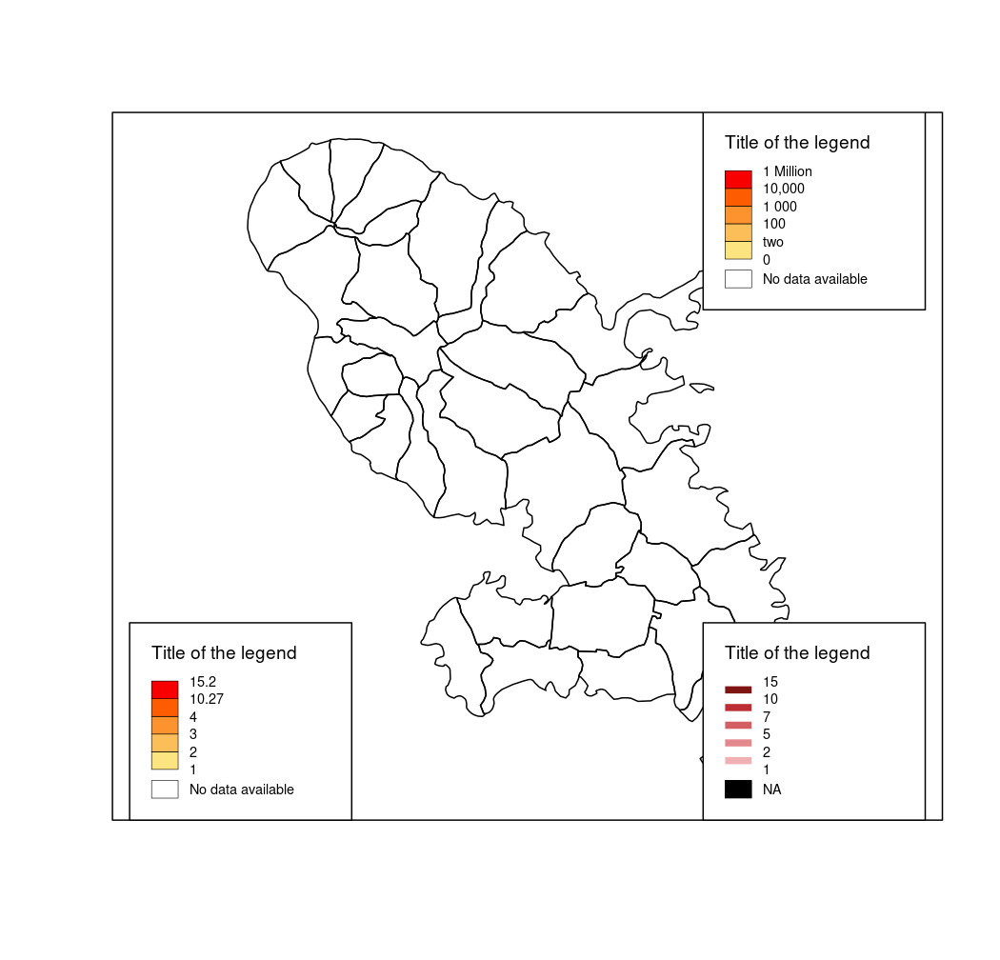

Plot legend for choropleth maps.
legendChoro(pos = "topleft", title.txt = "Title of the legend", title.cex = 0.8, values.cex = 0.6, breaks, col, cex = 1, values.rnd = 2, nodata = TRUE, nodata.txt = "No data", nodata.col = "white", frame = FALSE, symbol = "box", border = "black", horiz = FALSE)
| pos | position of the legend, one of "topleft", "top", "topright", "right", "bottomright", "bottom", "bottomleft", "bottomleftextra", "left" or a vector of two coordinates in map units (c(x, y)). |
|---|---|
| title.txt | title of the legend. |
| title.cex | size of the legend title. |
| values.cex | size of the values in the legend. |
| breaks | break points in sorted order to indicate the intervals for assigning the colors. Note that if there are nlevel colors (classes) there should be (nlevel+1) breakpoints. It is possible to use a vector of characters. |
| col | a vector of colors. |
| cex | size of the legend. 2 means two times bigger. |
| values.rnd | number of decimal places of the values in the legend. |
| nodata | if TRUE a "no data" box or line is plotted. |
| nodata.txt | label for "no data" values. |
| nodata.col | color of "no data" values. |
| frame | whether to add a frame to the legend (TRUE) or not (FALSE). |
| symbol | type of symbol in the legend 'line' or 'box' |
| border | color of the box borders |
| horiz | layout of legend, TRUE for horizontal layout |
#> Reading layer `mtq' from data source `/home/tim/Documents/pkg/cartography/inst/gpkg/mtq.gpkg' using driver `GPKG' #> Simple feature collection with 34 features and 7 fields #> geometry type: MULTIPOLYGON #> dimension: XY #> bbox: xmin: 690574 ymin: 1592536 xmax: 735940.2 ymax: 1645660 #> epsg (SRID): 32620 #> proj4string: +proj=utm +zone=20 +datum=WGS84 +units=m +no_defsbox()legendChoro(pos = "bottomleft", title.txt = "Title of the legend", title.cex = 0.8, values.cex = 0.6, breaks = c(1,2,3,4,10.27,15.2), col = carto.pal(pal1 = "orange.pal",n1 = 5), values.rnd =2, nodata = TRUE, nodata.txt = "No data available", frame = TRUE, symbol="box")legendChoro(pos = "bottomright", title.txt = "Title of the legend", title.cex = 0.8, values.cex = 0.6, breaks = c(1,2,5,7,10,15.27), col = carto.pal(pal1 = "wine.pal",n1 = 5), values.rnd = 0, nodata = TRUE, nodata.txt = "NA",nodata.col = "black", frame = TRUE, symbol="line")legendChoro(pos = "topright", title.txt = "Title of the legend", title.cex = 0.8, values.cex = 0.6, breaks = c(0,"two","100","1 000","10,000", "1 Million"), col = carto.pal(pal1 = "orange.pal",n1 = 5), values.rnd =2, nodata = TRUE, nodata.txt = "No data available", frame = TRUE, symbol="box")